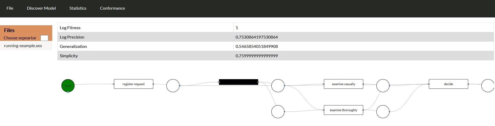

Inductive Miner¶
In case the user chooses heuristic miner then a webpage with a table will appear which show the Log Fitness, Precision, Generalization and Simplicity evaluation for the specific file. Also, petri net of the algorithm will appear under the table. The petri net is developed with react flow, an open-source library which allow the web user to drag and drop any transition and place of the graph.
In case the user chooses a csv file and then selects one of the above three options, then the choose heeder screen will appear and then the web interface will display the webpage with the table and the petri net.